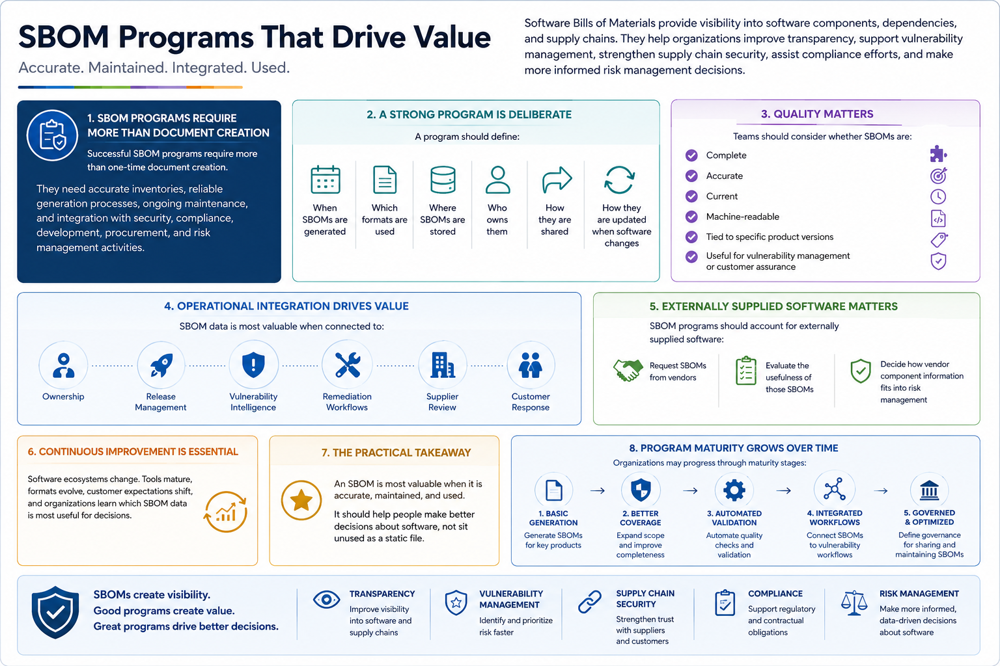

What Is SBOM?
Building an SBOM Program
Connecting to LMS... Progress: in progress
Version 1.0 | Date: 2026-06-16 | Educational overview of Software Bill of Materials concepts.

Narration
Successful SBOM programs require more than one-time document creation. They need accurate inventories, reliable generation processes, ongoing maintenance, and integration with security, compliance, development, procurement, and risk management activities.
A program should define when SBOMs are generated, which formats are used, where SBOMs are stored, who owns them, how they are shared, and how they are updated when software changes.
Quality matters. Teams should consider whether SBOMs are complete, accurate, current, machine-readable, tied to specific product versions, and useful for vulnerability management or customer assurance.
Operational integration matters too. SBOM data is most valuable when connected to ownership, release management, vulnerability intelligence, remediation workflows, supplier review, and customer response processes.
SBOM programs should also account for externally supplied software. Organizations may request SBOMs from vendors, evaluate the usefulness of those SBOMs, and decide how vendor component information fits into risk management.
Continuous improvement is important because software ecosystems change. Tools mature, formats evolve, customer expectations shift, and organizations learn which SBOM data is most useful for decisions.
Software Bills of Materials provide visibility into software components, dependencies, and supply chains. They help organizations improve transparency, support vulnerability management, strengthen supply chain security, assist compliance efforts, and make more informed risk management decisions.
The practical takeaway is simple: an SBOM is most valuable when it is accurate, maintained, and used. It should help people make better decisions about software, not sit unused as a static file.
Program maturity usually grows over time. Organizations may start with basic generation, then improve coverage, automate validation, connect SBOMs to vulnerability workflows, and define clearer governance for sharing and maintaining SBOM data.